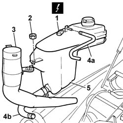
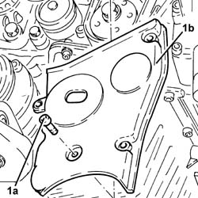
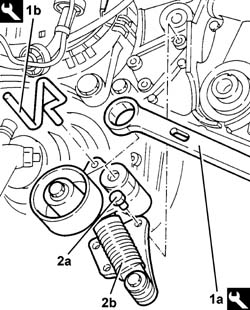
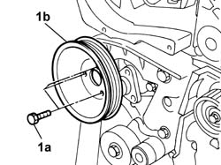
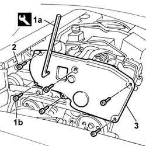
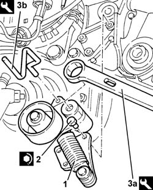

1032D12 Timing system protective COVER(S) - R.R.
- Path
- Procedures > 10 ENGINE > 1032 timing system > 1032D TIMING SYSTEM PROTECTION > 1032D12 Timing system protective COVER(S) - R.R.
- Kind
- repair procedure (removal / refitting; the operation number is the code)
- Applies to
- engines: 2.4 JTD 20V; all production periods
- Interactive page
- https://sloeber94.github.io/elrnDB-lThss/en/#/850173
Applies to: engines: 2.4 JTD 20V; all production periods
 Removing
Removing
 Refitting
Refitting- Position the vehicle on a lift.
- Open the boot and disconnect the negative battery terminal.
See in Op. 7055B54 PROTECTION/GUARD under engine - R.R.
See in Op. 4450B04 Right FRONT WHEEL (one) - R.R.
See in Op. 7055B42 FRONT WHEEL ARCH LINER (one), left or right - R.R.
See in Op. 7055B64 Engine compartment DUST SEAL in front wheel arch (one), left or right - R.R.
See in Op. 1016A10 SOUND-PROOFING COVER - R.R.
See in Op. 7040D50 ENGINE COMPARTMENT UPPER SOUND INSULATION SHIELD - R.R.
See in Op. 1048B44 RIGID air supply PIPE from heat exchanger to intake manifold - R.R.
See in Op. 1048A56 UPPER RESONATOR - R.R.
See in Op. 1092G10 Engine components single drive BELT - R.R.
See in Op. 1092G21 Engine components single belt FIXED TENSIONER - R.R. with belt removed
See in Op. 1092A10 Crankshaft PULLEY - R.R.
1. Disconnect the electrical connection for the engine coolant level sensor.
 | Description | Connector |
|---|---|---|
1 | Engine coolant level sensor | K026 |
2. Undo the nut fixing the engine coolant reservoir and the screen washer fluid filler pipe.
3. Remove the windscreen washer fluid filler pipe.
- Position a suitable container for collecting the engine coolant.
4. Disconnect the flexible engine coolant recirculation pipes from the reservoir (4a) and the flexible pipe from the rigid pipe (4b).
5. Remove the engine coolant reservoir.

Applies to: engines: 2.4 JTD 20V; all production periods
1. Undo the retaining bolts.
2. Remove the lower section of the timing protective cover.

Applies to: engines: 2.4 JTD 20V; all production periods
1. Remove the pin (1b) using the tool (1a) on the moving tensioner.
 | Description | Code | Function |
|---|---|---|---|
1a | Spanner | 1.860.968.000 | Tensioning auxiliary shaft belt |
| Description | Code | Function |
|---|---|---|---|
1b | Lock | 1.870.645.000 | Tensioning auxiliary shaft belt |
2. Undo the fixing bolt (2a) and remove the services belt moving tensioner (2b).

Applies to: engines: 2.4 JTD 20V; all production periods
1. Undo the fixing bolts (1a) and remove the power assisted steering pump pulley (1b).

Applies to: engines: 2.4 JTD 20V; all production periods
1. Undo the fixing bolt (1b) using the special hexagonal spanner (1a).
| Description | Code | Function |
|---|---|---|---|
1a | Spanner | 1.871.001.100 | Spanner for timing guard |
2. Undo the remaining fixing bolts using an ordinary spanner.
3. Remove the timing belt upper cover.

Applies to: engines: 2.4 JTD 20V; all production periods
Refitting
Removing- Fit the upper part of the protective cover and tighten the fixing bolts to the recommended torque and tighten the remaining fixing bolts using the special tool.
| Description | Code | Function |
|---|---|---|---|
. | Spanner | 1.871.001.100 | Spanner for timing guard |
 | Value - daNm | Fastening | Component | Ø |
|---|---|---|---|---|
. | 0.9 | Bolt | TIMING BELT PROTECTIVE COVER(S) | M6 |
- Fit the power assisted steering pump pulley in the housing on the support.
- Tighten the bolts fixing thepower assisted steering pump to the support to torque.
| Value - daNm | Fastening | Component | Ø |
|---|---|---|---|---|
. | 2.5 | Bolt | POWER STEERING PUMP | M8 |
1. Fit the auxiliary shaft drive belt moving tensioner.
2. Tighten the fixing bolts to torque.
| Value - daNm | Fastening | Component | Ø |
|---|---|---|---|---|
2 | 2.5 | Bolts | SINGLE BELT MOVING TENSIONER VARIOUS | M8 |
| Value - daNm | Fastening | Component | Ø |
|---|---|---|---|---|
2 | 6 | Bolts | SINGLE BELT MOVING TENSIONER VARIOUS | M10 |
3. Fit the moving tensioner spring pre-loading pin (3b) acting on the moving tensioner using the tool (3b).
| Description | Code | Function |
|---|---|---|---|
3a | Spanner | 1.860.968.000 | Tensioning auxiliary shaft belt |
| Description | Code | Function |
|---|---|---|---|
3b | Lock | 1.870.645.000 | Tensioning auxiliary shaft belt |

Applies to: engines: 2.4 JTD 20V; all production periods
- Fit the lower section of the protective cover tightening the fixing bolts to torque.
| Value - daNm | Fastening | Component | Ø |
|---|---|---|---|---|
. | 0.9 | Bolt | TIMING BELT PROTECTIVE COVER(S) | M6 |
- Connect the engine coolant pipes to the reservoir.
- Position the engine coolant reservoir in the special housing together with the screen washer fluid filler pipe.
- Tighten the engine coolant reservoir fixing nut.
- Connect the electrical connection for the engine coolant level sensor.
| Description | Connector |
|---|---|---|
. | Engine coolant level sensor | K026 |
See in Op. 1092A10 Crankshaft PULLEY - R.R.
See in Op. 1092G21 Engine components single belt FIXED TENSIONER - R.R. with belt removed
See in Op. 1092G10 Engine components single drive BELT - R.R.
See in Op. 1048A56 UPPER RESONATOR - R.R.
See in Op. 1048B44 RIGID air supply PIPE from heat exchanger to intake manifold - R.R.
See in Op. 7040D50 ENGINE COMPARTMENT UPPER SOUND INSULATION SHIELD - R.R.
See in Op. 1016A10 SOUND-PROOFING COVER - R.R.
See in Op. 7055B64 Engine compartment DUST SEAL in front wheel arch (one), left or right - R.R.
See in Op. 7055B42 FRONT WHEEL ARCH LINER (one), left or right - R.R.
See in Op. 7055B54 PROTECTION/GUARD under engine - R.R.
See in Op. 4450B04 Right FRONT WHEEL (one) - R.R.
- Top up the engine coolant, following the instructions in the description:
See in Op. 0010T21 ENGINE COOLANT - Check density and top up if necessary
- Connect the negative battery terminal.
- Remove the vehicle from the lift.
Topics linked from this page (12)
- 0010T21 ENGINE COOLANT - Check density and top up if necessary
- 1016A10 SOUND-PROOFING COVER - R.R.
- 1048A56 UPPER RESONATOR - R.R.
- 1048B44 RIGID air supply PIPE from heat exchanger to intake manifold - R.R.
- 1092A10 Crankshaft PULLEY - R.R.
- 1092G10 Engine components single drive BELT - R.R.
- 1092G21 Engine components single belt FIXED TENSIONER - R.R. with belt removed
- 4450B04 Right FRONT WHEEL (one) - R.R.
- 7040D50 ENGINE COMPARTMENT UPPER SOUND INSULATION SHIELD - R.R.
- 7055B42 FRONT WHEEL ARCH LINER (one), left or right - R.R.
- 7055B54 PROTECTION/GUARD under engine - R.R.
- 7055B64 Engine compartment DUST SEAL in front wheel arch (one), left or right - R.R.
Topics that link to this page (19)
- 1016B10 SINGLE CAMSHAFT HOUSING - REPLACE gasket
- 1016C10 SINGLE CYLINDER HEAD - R.R. and Replace gasket
- 1020D12 Crankshaft oil seal FRONT COVER - R.R. and Replace seals
- 1020D18 Front crankshaft COVER OIL SEAL - Replace
- 1028H10 CONNECTING ROD and PISTON SET - R&R
- 1032B10 TOOTHED timing BELT - R.R. for timing adjustment or replacement
- 1032B46 TOOTHED DRIVE PULLEY/S - R.R.
- 1032B52 TOOTHED DRIVEN PULLEY (one) - R.R.
- 1032B60 TOOTHED DRIVEN PULLEY - R.R.
- 1032C18 Timing belt MOVING TENSIONER - R.R.
- 1032C32 TIMING BELT FIXED TENSIONER - R.R.
- 1036L10 CAMSHAFTS in camshaft housing RR includes camshaft housing replacement.
- 1036L30 FRONT OIL SEAL for camshaft housing camshaft - REPLACE
- 1060E10 PRESSURE PUMP for diesel injection - R.R.
- 1060E30 PRESSURE PUMP drive PULLEY - R.R.
- 1060E40 PRESSURE PUMP SUPPORT - R.R.
- 1072B10 INTAKE MANIFOLD - R.R. and Replace gasket
- 1088C10 WATER PUMP - R.R.
- 4130B32 POWER STEERING - R.R.